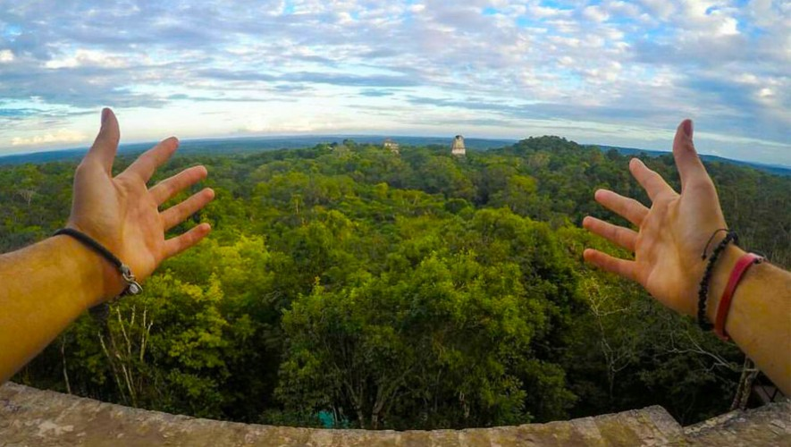

Información
Y cómo no incluir este hermoso lugar, con más de 3,000 estructuras arqueológicas, Tikal se ha convertido en un símbolo de la cultura maya y de Guatemala. Es toda una maravillosa natural rodeada de mucha vegetación y de historia. Visitar este destino es una experiencia única en donde la vista panorámica te dejará sin aliento.
Explora Tikal
Galería de Imágenes

Templo del Gran Jaguar

Vista de la naturaleza en Tikal